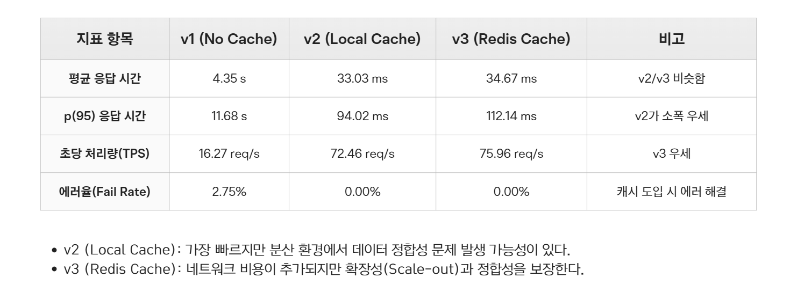

1. 주제 선정 배경
4인 팀으로 진행한 뷰티 커머스 백엔드 프로젝트입니다. 대규모 트래픽 검증 환경 구축을 담당했으며, 트래픽 증가 상황에서 발생할 수 있는 병목과 장애를 사전에 검증하는 데 집중했습니다. Multi-Level Cache 아키텍처와 분산 부하 테스트 환경을 구축하여 검색 성능을 개선하고, 대규모 요청 환경에서도 안정적으로 동작할 수 있는 기반을 마련했습니다.
2. 담당 역할
- 상품 검색 성능 개선 및 대규모 트래픽 검증 환경 구축 담당
- k6 부하 테스트 기반 병목 분석 및 성능 개선 주도
- 캐시 아키텍처 설계와 데이터 일관성 보장 전략 구현
3. 기술 스택
Java / Spring Boot Multi-Level Cache Redis Pub/Sub Load Testing (k6) Index Tuning
4. 아키텍처 다이어그램
4.1 서비스 아키텍쳐 (Service Architecture)
(Web / App / Postman)"):::client subgraph Spring_Boot_Application ["Spring Boot Application"] Auth("Auth / Member") ProductSearch("Product / Search") OrderPayment("Order / Payment / Coupon / Point") Chat("Chat
(WebSocket + STOMP)") end subgraph Search_Strategy ["Search Strategy"] v1("v1
DB Direct") v2("v2
Caffeine Cache") v3("v3
Redis Cache") end subgraph Redis_Layer ["Redis"] RemoteCache("Remote Cache"):::cache PopularKeyword("Popular Keyword
ZSet"):::cache PubSub("Pub/Sub"):::cache end JWT("JWT ChannelInterceptor") CaffeineDB[("Caffeine")]:::db MySQLDB[("MySQL")]:::db Client --> Auth Client --> ProductSearch Client --> OrderPayment Client <-->|WebSocket / STOMP| Chat ProductSearch --> v1 ProductSearch --> v2 ProductSearch --> v3 ProductSearch --> PopularKeyword OrderPayment --> JWT Chat --> JWT Chat <--> PubSub v1 --> MySQLDB v2 --> CaffeineDB v3 --> RemoteCache CaffeineDB --> MySQLDB RemoteCache --> MySQLDB
4.2 인프라 아키텍처 (Infrastructure Architecture)
Spring Boot + Docker"):::aws RDS("RDS
(MySQL)"):::aws ElastiCache("ElastiCache
(Redis)"):::aws end Developer --> GitHub GitHub --> GitHubActions GitHubSecrets --> GitHubActions GitHubActions --> AmazonECR GitHubActions --> SSM AmazonECR --> EC2 SSM --> EC2 ParameterStore --> EC2 EC2 --> RDS EC2 --> ElastiCache
5. 주요 기능
- 상품 검색 시스템: Redis ZSet을 활용한 실시간 인기 검색어 제공 및 인덱스 튜닝을 통한 고속 검색 지원
- 대규모 트래픽 대응: 다단계 캐시 전략 적용 및 분산 부하 테스트(k6)를 통한 성능 병목 검증과 해소
6. 기술적 의사결정 및 트러블슈팅
k6 부하 테스트 설계 및 다단계 캐시(Multi-Level Cache) 성능 검증
[배경]
사전 부하 테스트 시 100 VUs 단계에서 전체적인 시스템 응답 지연이 급증하며 장애 임계점(Breaking Point)에 조기 도달했습니다. 대용량 트래픽 하에서의 병목 지점을 특정하고 단계별 캐시 전략(v1~v3)의 실질적인 개선 지표를 객관적으로 검증하기 위한 부하 테스트 설계가 필요했습니다.
[기술적 의사결정]
Docker 환경에서 k6(부하 생성기)와 InfluxDB, Grafana를 연동하여 실시간 지표 관제 체계를 마련했습니다. 점진적으로 부하를 높이는 stages 시나리오(30s Ramp-up 50 VUs ➡️ 1m Steady ➡️ 30s Step-up 100 VUs ➡️ 1m Steady ➡️ 30s Step-up 150 VUs ➡️ 1m 유지)를 설계하여 임계 시점의 하드웨어 및 소프트웨어 자원 지표를 추적했습니다.
[주요 구현]
- 부하 테스트 인프라 구축: k6 스크립트를 작성하고 InfluxDB에 시계열 지표를 적재하여 Grafana로 병목 실시간 관제
- v1(No Cache) DBCP 자원 고갈 규명: 100 VUs 도달 시, 느린 DB 조회 쿼리가 커넥션을 길게 점유하면서 WAS의 HikariCP 커넥션 풀 자원 고갈(Connection Timeout)이 발생하고, 후순위 요청들이 연속적으로 실패(
dial: i/o timeout)하는 악순환을 실행 계획 분석 및 덤프를 통해 검증 - 캐시 전략별 성능 비교: 캐시 미적용(v1), Caffeine 로컬 캐시 적용(v2), Redis 분산 캐시 적용(v3) 환경의 평균/p(95) 지연 시간, TPS, 에러율 다각도 계측
[성과]
캐시 미적용 시 발생하던 2.75%의 에러율을 0.00%로 완벽하게 제어했습니다. p(95) 응답 시간을 11.68초에서 112.14ms(v3 기준)로 단축시켰으며, TPS는 16.27에서 75.96으로 약 4.6배 대폭 상향시켜 DB 커넥션 풀 부족으로 인한 병목을 완벽히 해소했습니다.

다단계 캐싱(Multi-Level Cache)과 Redis Pub/Sub을 활용한 검색 성능 및 정합성 개선
[배경]
반복적인 상품 검색 요청이 DB 부하로 이어지는 현상을 막기 위해 캐시를 도입했습니다. 그러나 Scale-out된 다중 애플리케이션 환경에서 데이터 갱신 시 각 WAS 인스턴스에 분산된 로컬 캐시 데이터가 즉시 갱신되지 못해, 인스턴스별로 서로 다른 데이터를 반환하는 캐시 데이터 불일치(Inconsistency) 리스크가 존재했습니다.
[기술적 의사결정]
로컬 캐시의 빠른 속도(L1)와 분산 캐시의 저장 공간(L2) 장점을 결합한 Caffeine(L1) + Redis(L2) 다단계 캐시 구조를 설계했습니다. 또한, 분산 인스턴스 간 로컬 캐시 불일치 문제를 종식시키기 위해 Redis Pub/Sub 채널을 통한 이벤트 기반 실시간 캐시 무효화(Cache Invalidation)를 도입하여 정합성 문제를 원천 차단했습니다.
[주요 구현]
- 하이브리드 캐시 만료 설계: Caffeine(L1)과 Redis(L2) 캐시 만료 주기를 각각 10분으로 구현하고, 데이터 변경 이벤트 인입 시 Redis Pub/Sub을 구독하는
CacheSyncMessageListener가 작동해 L1 캐시를 즉시clear()시키는 무효화 루틴 구현 - 아키텍처적 트레이드오프 검토: Pub/Sub 이벤트 전송망 장애 및 네트워크 단절로 동기화가 실패할 가능성을 대비하여, 현 10분인 L1 캐시 TTL(Caffeine)을 초 단위(예: 10초~30초)로 좁히는 Eventual Consistency 보완 가이드라인 도출
- 이중 캐시 무효화 정합성 확보: 데이터 수정/삭제 트랜잭션 완료 직후 Redis L2 캐시 삭제와 동시에 Pub/Sub 채널에 동기화 메시지를 발행하도록 보장
[성과]
다중 서버 분산 환경에서도 검색 정보의 실시간 정합성 100%를 달성했습니다. 로컬 캐시(L1) 히트를 통해 캐시 조회 네트워크 비용을 절감하는 동시에, 캐시 무효화 동기화를 결합하여 일관성을 엄격하게 준수하는 뛰어난 신뢰성의 고속 검색 API 환경을 다졌습니다.
복합 인덱스 튜닝 및 Redis ZSet 기반 검색 인프라 구축
[배경]
대규모 상품 데이터 환경에서 카테고리, 상품 상태, 상품명 조건 및 정렬이 포함된 검색 쿼리 실행 시 Filesort가 발생하며 응답 속도가 저하되는 문제를 확인했습니다. 또한 사용자의 검색 데이터를 활용한 검색 경험 개선이 필요했습니다.
[기술적 의사결정]
실행 계획(EXPLAIN)을 분석하여 실제 검색 패턴에 최적화된 복합 인덱스(category_id, status, name)를 설계했습니다. 또한 실시간 인기 검색어 기능 구현을 위해 정렬 및 랭킹 조회에 강점을 가진 Redis Sorted Set(ZSet)을 활용했습니다.
[주요 구현]
- EXPLAIN 기반 쿼리 실행 계획 분석 및 병목 구간 파악
- 복합 인덱스(category_id, status, name) 설계 및 적용
- Redis ZSet 기반 실시간 인기 검색어 기능 및 IP + TTL 기반 중복 검색어 카운트 방지 로직 적용
[성과]
검색 쿼리 성능 개선 및 Filesort 제거 성공. 실시간 인기 검색어 기능을 제공하여 사용자 검색 데이터 기반 탐색 경험을 크게 향상시켰으며, 데이터 증가 상황에서도 안정적인 검색 성능을 확보했습니다.